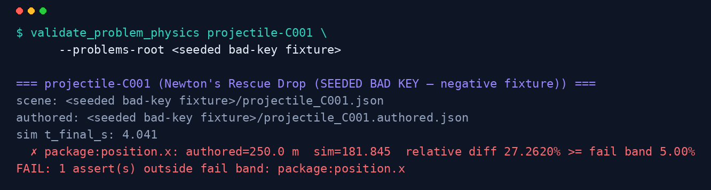

The correctness machinery
How a wrong answer never ships
Between a draft problem and a student's page stands a gauntlet of build-blocking gates. Not one of them is advisory: each blocks a commit or a build, and a real refusal looks like the capture below.
The gauntlet
~43
distinct, build-blocking gates stand between a draft and a
shippable page — counted live from the registry, never by hand.

Data validators
25 gates
compat-mode validator
a Document() caller that never sets Word compatibility mode
data integrity validator
problem/solution data files with integrity violations
diagram validator
diagram functions that violate placement/helper conventions
grader-reference validator
an incomplete grader reference directory
MC validation runner
multiple-choice content failing the unified MC check set
MC database validator
an MC database file that fails the CI-side database checks
MC schema validator
MC records missing status/last_reviewed/teacher_notes schema fields
physics validator
a problem whose physics fails a computed check (the first build gate)
plan validator
a plan/sketch/dispatch doc that violates the plan schema
solution-structure validator
an energy solution not starting with the work-energy theorem
problem-physics simulation validator
authored answers that disagree with the physics simulation
sim_scene drift check
a problem whose pinned sim_scene snapshot has drifted from its live scene re-run
scene-band self-check
a scene whose simulated outputs fall outside its own declared expected bands
content-slice validator
cum-exam student-report prose slices with content violations
cum-V population validator
roster-vs-report population mismatches in Cum V grading
data-file validator
problem/solution files failing the shared data-validation checks
DE choice-value validator
a DE item whose computed_value disagrees with its choices
EM field-map validator
equipotential-map diagrams with static-analysis violations
helper-usage validator
a helper imported but never referenced (partial-revert smell)
registry-consistency validator
cross-registry inconsistencies in the grading pipeline
roster validator
a roster xlsx whose entries/snapshot fail schema validation
single-form validator
single-form scanner-pathway violations
surface-tangent validator
un-smoothed tangent mismatches at Surface junctions
uncertainty-box validator
DE answer-form uncertainty boxes with bad layout
validation facade
(facade) the aggregate validator surface the build imports
Git-hook gates
12 gates
helper-reversion guard
silent reversion of a shared helper back to an inlined workaround
compat-mode guard
committing a .docx path that skips Word compatibilityMode=15
engine-universality guard
sim-engine changes that break the universality invariant
plan-prune-invariants guard
pruning a plan/state file in violation of the plan-prune invariants
workflow-render guard
committing a workflow doc whose rendered output is stale
bridge-prefix guard
a bridge module committed without its required prefix convention
pii-secret guard
committing student PII or a secret into tracked content
plan close-out validator
closing a plan whose close-out invariants are unmet
L1 purity check
an L1-layer module importing across a forbidden architectural layer
move-readiness check
a content move whose readiness preconditions are not satisfied
product anthropic gate
a metered-Anthropic-API code path entering the product tree
smoke registered tests
pushing when the registered smoke-test set does not pass
Static lints
6 gates
dispatcher-cardinality lint
more than one hooks dispatcher or a non-conforming hooks.d entry
dispatcher-purity lint
the SC7 dispatcher breaking its architectural-purity promises
E-at-consumer-access lint
an E-value accessed outside its sanctioned consumer boundary
path-validation SSOT lint
an inline path-field check that bypasses the path-validation SSOT
schema-framework lint
a new data/_schemas class that is not a Pydantic v2 BaseModel
stage-schema-consistency lint
a TOML [[stages]] chain that is not schema-compatible end to end
Is the answer key even right?
A gate that blocks bad work is only as good as its idea of "right". Three welds pin every problem to a running simulation, and a three-way triangulation reconciles the authored answer key against physics computed two independent ways — one of them checked against a Lean proof. That machinery has its own room.